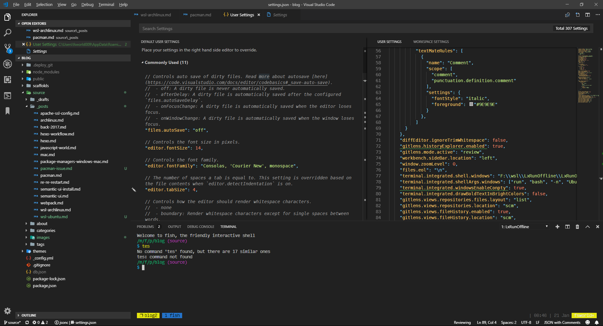
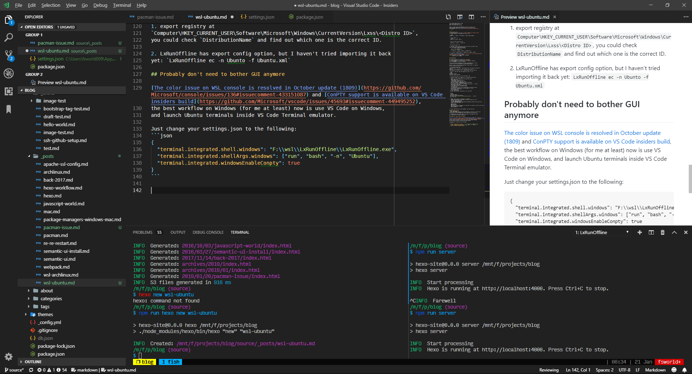

Install Ubuntu instance in WSL
There is already one when you enable WSL, but I’d like to install it on
different drives, and not need to worry about messing it up, so I discovered
a WSL Management tool LxRunOffline
(Updated 2020/06/26: Found a note I wrote back in Sep 2019 when I was trying
to install WSL in a new laptop, so added a troubleshoot section below. Also
added a section for upgrading to WSL2)
Download and install
follow the quick start here
to download the Ubuntu for MS image, then install it with1LxRunOffline i -n Ubuntu -d F:\WSL\Ubuntu -f <path_to_ubuntu_image> -sTo start ubuntu, run
1LxRunOffline run bash -n UbuntuOr you can create a shortcut as well
1LxRunOffline s -n Ubuntu -f F:\Ubuntu.lnkOr use
wslcommand1wsl -d UbuntuYou can also set default wsl version so that you only need to type
wsl12wsl --set-default UbuntuwslYou should be login as root
Create User, similar to what we do in Arch Linux install, we need to create
a user with ability to sudo without passwordrun
visudoand add a new user group1%wheel ALL=(ALL) NOPASSWD: ALLcreate user:
useradd -m -G wheel -s /bin/bash user1
run
id user1to get UID, and runLxRunOffline su <number> -n Ubuntu,
so next time you will be login as user1 on launch.configure WSL_DISTRIBUTION_FLAGS,
I set to 5 so that it won’t append %PATH% from WindowsLxRunOffline se 5 -n Ubuntu
Package Manager
This time I’d like to try Linuxbrew
for installing packages for developer works (like nodejs).
For system packages I’ll try to stick with apt. This way it should be
safer to do upgrades for my work environment.
I chose Linuxbrew mainly because my current work laptop is Mac, so it is more
consistent for me to switch between work laptop and my Windows PC.
The other reason is that apt prefers stable over latest version, so it might be
difficult to get what I need for work.
Following their guide to do
sudo sh -c "$(curl -fsSL https://raw.githubusercontent.com/Linuxbrew/install/master/install.sh",
I get “Don’t run this as Root!” error, but withoutsudoit won’t
have permission to create or write to/home/linuxbrew/when not using root.Solution: create that folder beforehand and set owner to
user1123cd /home/sudo mkdir linuxbrewsudo chown -R user1 linuxbrew/Then you should be able to run the script without
sudoThe output message contains suggestion on following installation steps:
123456789101112131415161718- Install the Linuxbrew dependencies if you have sudo access:Debian, Ubuntu, etc.sudo apt-get install build-essentialFedora, Red Hat, CentOS, etc.sudo yum groupinstall 'Development Tools'See http://linuxbrew.sh/#dependencies for more information.- Add Linuxbrew to your ~/.profile by runningecho 'eval $(/home/linuxbrew/.linuxbrew/bin/brew shellenv)' >>~/.profile- Add Linuxbrew to your PATHPATH="/home/linuxbrew/.linuxbrew/bin:$PATH"- We recommend that you install GCC by running:brew install gcc- After modifying your shell profile, you may need to restart your session(logout and then log back in) if the brew command isn't found.- Run `brew help` to get started- Further documentation:https://docs.brew.shWarning: /home/linuxbrew/.linuxbrew/bin is not in your PATH.So we do
1234567sudo apt-get updatesudo apt-get install build-essential# This one is optional, can also edit $PATH from wsl, see step 4echo 'eval $(/home/linuxbrew/.linuxbrew/bin/brew shellenv)' >>~/.profilebrew install gcc(Only required if you skipped echo ‘eval… command above)
Prepend/home/linuxbrew/.linuxbrew/bininto$PATH:- LxRunOffline has option to set default environment variables but I’m not
sure how to edit multiple lines. - So I open
regeditand go toComputer\HKEY_CURRENT_USER\Software\Microsoft\Windows\CurrentVersion\Lxss\<Distro ID>
and editDefaultEnvironmentto1234HOSTTYPE=x86_64LANG=en_US.UTF-8PATH=/home/linuxbrew/.linuxbrew/bin:/usr/local/sbin:/usr/local/bin:/usr/sbin:/usr/bin:/sbin:/bin:/usr/games:/usr/local/gamesTERM=xterm-256color
- LxRunOffline has option to set default environment variables but I’m not
now you should be able to install packages, like
brew install git
Set timezone
|
|
Then follow the instruction to set timezone
To update timezone:
|
|
Backup instance configs
export registry at
Computer\HKEY_CURRENT_USER\Software\Microsoft\Windows\CurrentVersion\Lxss\<Distro ID>,
you could checkDistributionNameand find out which one is the correct ID.LxRunOffline has export config option, but I haven’t tried importing it back
yet:LxRunOffline ec -n Ubunto -f Ubuntu.xml
Probably don’t need to bother with running GUI app anymore
The color issue on WSL console is resolved in October update (1809) and ConPTY support is available on VS Code insiders build,
the best workflow on Windows (for me at least) now is use VS Code on Windows,
and launch Ubuntu terminals inside VS Code Terminal emulator.
Just change your settings.json to the following:
Previously with Winpty, red bg will be rendered as yellow, and a lot of
black text get rendered as white, as below:

Now with Conpty:

Not too bad right? The font rendering is much better with Conpty as well.
Troubleshoot
visudo command not found
https://askubuntu.com/questions/1103038/cant-run-visudo-within-docker-sudoers-file-does-not-exist
visudo: no editor found (editor path = /usr/bin/editor)
|
|
useradd: group ‘wheel’ does not exist
|
|
/home/linuxbrew/.linuxbrew/Homebrew/Library/Homebrew/brew.sh: line 4: warning: setlocale: LC_ALL: cannot change locale (en_US.UTF-8): No such file or directory
https://askubuntu.com/questions/114759/warning-setlocale-lc-all-cannot-change-locale
|
|
Upgrade to WSL 2
(2020/06/26) Note that if your project is put on Windows file system and
shared to WSL distro, currently changing files from Windows won’t trigger
file change notifications on Linux side
(see https://github.com/microsoft/WSL/issues/4739). A workaround
would be move all files into WSL file system, and access them
from Windows (see below for instructions)
- Download amnd install WSL 2 Kernel from
https://docs.microsoft.com/en-us/windows/wsl/wsl2-kernel Enable the ‘Virtual Machine Platform’ optional component
- https://docs.microsoft.com/en-us/windows/wsl/install-win10
- Open Powershell as Administrator and run: 1dism.exe /online /enable-feature /featurename:VirtualMachinePlatform /all /norestart
- 1wsl --set-version Ubuntu 2
Prefer setting default wsl version to 2 after this
Access WSL filesystem from Windows
It is not recommend to edit files in WSL directly from Windows by opening files
from C drive (or the drive you installed the WSL). I recall that resulted
messing up file permissions when I tried that for WSL 1 distro. It’s also not
possible for WSL 2 distro since the entire disk is stored as a virtual disk
file. However, you can safely access WSL disks by navigating to \\wsl$\ in
file explorer.
(source: https://www.omgubuntu.co.uk/2020/04/access-wsl-files-windows-explorer)